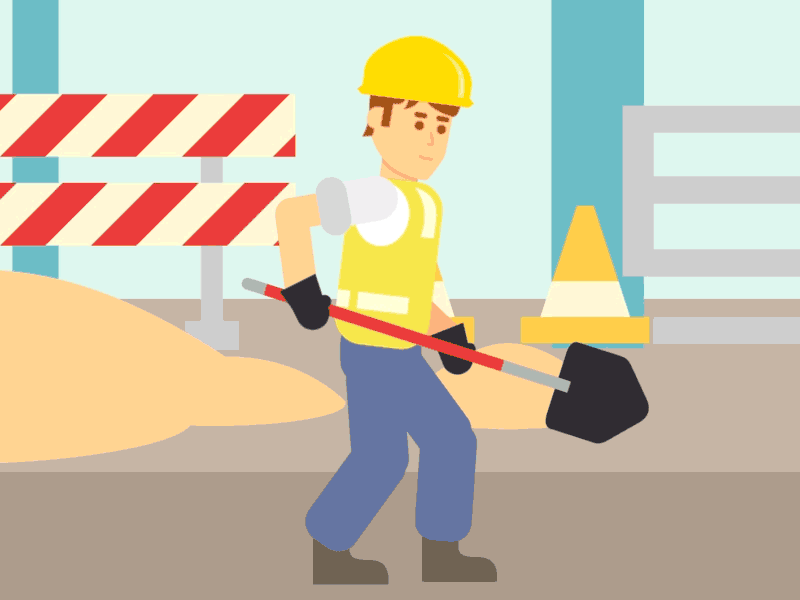
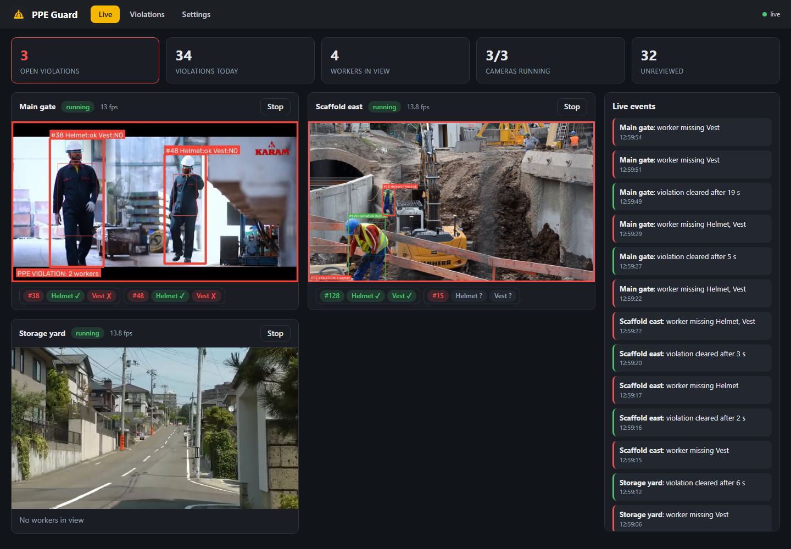
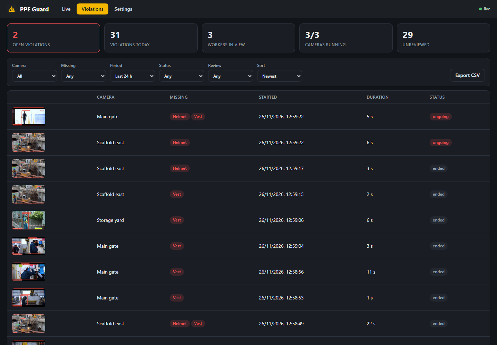
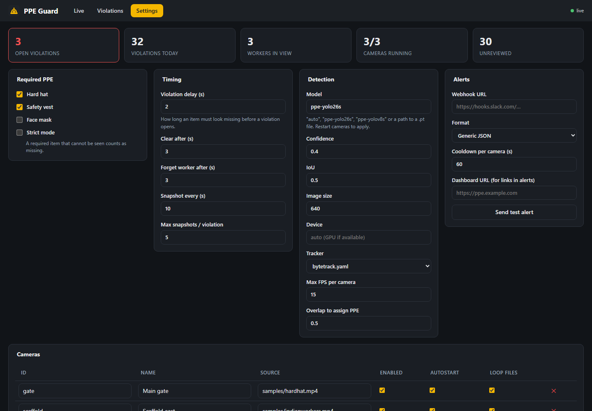

PPE Guard watches your site cameras, checks every worker for hard hats, hi-vis vests and masks, and turns that into a short list of reviewable incidents with snapshots and instant alerts.

A detector alone gives you thousands of boxes per minute. PPE Guard turns them into decisions a supervisor can act on.
Each hard hat and vest is matched to the person wearing it. A helmet nearby doesn't make a bare-headed worker look compliant.
Workers are tracked across frames, and an item must look missing for a set time before a violation opens.
Webcams, recorded video and RTSP IP cameras, several at once, with automatic reconnects.
Snapshots for every incident, review notes, filters and CSV export for your safety records.
Webhooks to Slack, Discord or your own system, with per-camera cooldowns so nobody gets spammed.
One pip install or one Docker command. Runs on CPU or NVIDIA GPU, with a REST and WebSocket API.
Five stages run for every camera frame.
A fine-tuned YOLO model finds people, hard hats, vests, masks and their "NO-" counterparts.
ByteTrack gives each person a stable ID across frames.
PPE boxes are matched to people by overlap and body region (head or torso).
Each worker's recent history decides whether an item is really missing.
Violations are logged with snapshots, pushed live to the dashboard and sent as alerts.
Live views, a review queue and settings in one lightweight web app with no build step.



Both models are trained on the Construction Site Safety dataset (CC BY 4.0) for 200 epochs at 640 px, then measured on a held-out test split that was never used for training or model selection.
| Model | Test precision | Test recall | Test mAP50 | Test mAP50-95 |
|---|---|---|---|---|
| ppe-yolo26s (default) | 0.940 | 0.765 | 0.822 | 0.574 |
| ppe-yolov8s (v1) | 0.923 | 0.782 | 0.814 | 0.556 |
PPE Guard supports safety decisions. It is not a certified safety system. Expect some missed and false detections, keep a person in the loop, and follow your local rules on workplace video monitoring.
Python 3.10+ and, for live video, ideally an NVIDIA GPU.
git clone https://github.com/VoxDroid/Construction-Site-Safety-PPE-Detection.git
cd Construction-Site-Safety-PPE-Detection
pip install torch torchvision --index-url https://download.pytorch.org/whl/cu128
pip install -e .
ppe-guard weights download
# check a photo or video
ppe-guard predict site.jpg --save out/
# run the dashboard on http://localhost:8000
ppe-guard serveSettings, the database and snapshots persist in ./data.
docker compose up -d --buildDownload the dataset, then fine-tune any Ultralytics detector.
ppe-guard dataset download
ppe-guard train --model yolo26s.pt
ppe-guard val --split test